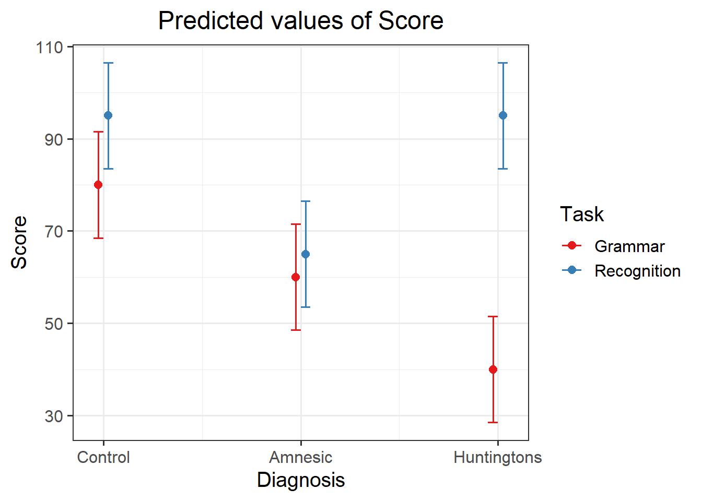

Read the data into R, and perform all the appropriate data management steps:
- Convert categorical variables to factors
- Label appropriately factors to aid with your model interpretations
- If needed, provide better variable names
library(tidyverse)
cog <- read_csv("https://uoepsy.github.io/data/cognitive_experiment_3_by_2.csv")
head(cog)
## # A tibble: 6 × 3
## Diagnosis Task Y
## <dbl> <dbl> <dbl>
## 1 1 1 44
## 2 1 1 63
## 3 1 1 76
## 4 1 1 72
## 5 1 1 45
## 6 1 2 70
The columns Diagnosis and Task should be coded into factors with better labels. The function factor() can be used by specifying the current levels and what labels each level should map to.
cog <- cog %>%
mutate(
Diagnosis = factor(Diagnosis,
levels = c(1, 2, 3),
labels = c('Amnesic', 'Huntingtons', 'Control')),
Task = factor(Task,
levels = c(1, 2),
labels = c('Grammar', 'Recognition'))
) %>%
rename(
Score = Y
)
head(cog)
## # A tibble: 6 × 3
## Diagnosis Task Score
## <fct> <fct> <dbl>
## 1 Amnesic Grammar 44
## 2 Amnesic Grammar 63
## 3 Amnesic Grammar 76
## 4 Amnesic Grammar 72
## 5 Amnesic Grammar 45
## 6 Amnesic Recognition 70
Choose appropriate reference levels for the factors.
The Diagnosis factor has a group coded “Control” which lends itself naturally to be the reference category.
cog$Diagnosis <- relevel(cog$Diagnosis, 'Control')
levels(cog$Diagnosis)
## [1] "Control" "Amnesic" "Huntingtons"
There is no natural reference category for the Task factor, so we will leave it unaltered. However, if you are of a different opinion, please note that there is no absolute correct answer. As long as you will interpret the model correctly, you will reach to the same conclusions as someone that has chosen a different baseline category.
Specify a multiple regression model to test the research hypothesis.
Store the model in an object named mdl_int.
Define the dummy variables for Diagnosis:
\[
D_\text{Amnesic} = \begin{cases}
1 & \text{if Diagnosis = Amnesic} \\
0 & \text{otherwise}
\end{cases}
\quad
D_\text{Huntingtons} = \begin{cases}
1 & \text{if Diagnosis = Huntingtons} \\
0 & \text{otherwise}
\end{cases}
\]
Define the dummy variable for Task:
\[
T_\text{Recognition} = \begin{cases}
1 & \text{if Task = Recognition} \\
0 & \text{otherwise}
\end{cases}
\]
The model becomes
\[
\begin{aligned}
Score &= b_0 \\
&+ b_1 D_\text{Amnesic} + b_2 D_\text{Huntingtons} \\
&+ b_3 T_\text{Recognition} \\
&+ b_4 (D_\text{Amnesic} * T_\text{Recognition}) + b_5 (D_\text{Huntingtons} * T_\text{Recognition}) \\
&+ \epsilon
\end{aligned}
\]
Fortunately, R computes the dummy variables for us! Each row in the summary of the model will correspond to one of the \(b\)’s in the equation above.
mdl_int <- lm(Score ~ Diagnosis * Task, data = cog)
summary(mdl_int)
##
## Call:
## lm(formula = Score ~ Diagnosis * Task, data = cog)
##
## Residuals:
## Min 1Q Median 3Q Max
## -16.00 -12.25 2.00 11.75 18.00
##
## Coefficients:
## Estimate Std. Error t value Pr(>|t|)
## (Intercept) 80.000 5.859 13.653 8.27e-13 ***
## DiagnosisAmnesic -20.000 8.287 -2.414 0.02379 *
## DiagnosisHuntingtons -40.000 8.287 -4.827 6.45e-05 ***
## TaskRecognition 15.000 8.287 1.810 0.08281 .
## DiagnosisAmnesic:TaskRecognition -10.000 11.719 -0.853 0.40192
## DiagnosisHuntingtons:TaskRecognition 40.000 11.719 3.413 0.00228 **
## ---
## Signif. codes: 0 '***' 0.001 '**' 0.01 '*' 0.05 '.' 0.1 ' ' 1
##
## Residual standard error: 13.1 on 24 degrees of freedom
## Multiple R-squared: 0.7394, Adjusted R-squared: 0.6851
## F-statistic: 13.62 on 5 and 24 DF, p-value: 2.359e-06
Create a table of group means, and map each coefficient to the group means.
means <- cog %>%
group_by(Diagnosis, Task) %>%
summarise(M = mean(Score))
means
## # A tibble: 6 × 3
## # Groups: Diagnosis [3]
## Diagnosis Task M
## <fct> <fct> <dbl>
## 1 Control Grammar 80
## 2 Control Recognition 95
## 3 Amnesic Grammar 60
## 4 Amnesic Recognition 65
## 5 Huntingtons Grammar 40
## 6 Huntingtons Recognition 95
\(b_0\) = 80
= Mean(Control, Grammar)
\(b_1\) = -20
= Mean(Amnesic, Grammar) - Mean(Control, Grammar)
= 60 - 80
\(b_2\) = -40
= Mean(Huntingtons, Grammar) - Mean(Control, Grammar)
= 40 - 80
\(b_3\) = 15
= Mean(Control, Recognition) - Mean(Control, Grammar)
= 95 - 80
\(b_4\) = -10
= [Mean(Amnesic, Recognition) - Mean(Amnesic, Grammar)] -
[Mean(Control, Recognition) - Mean(Control, Grammar)]
= [65 - 60] - [95 - 80] = 5 - 15 = -10
\(b_5\) = 40
= [Mean(Huntingtons, Recognition) - Mean(Huntingtons, Grammar)] -
[Mean(Control, Recognition) - Mean(Control, Grammar)]
= [95 - 40] - [95 - 80] = 55 - 15 = 40
Load the sjPlot package and try using the function plot_model() to investigate the interactions.
Hint
Remember from last week that the default behaviour of plot_model() is to plot the parameter estimates and their confidence intervals. This is where type = “est” will come handy.
library(sjPlot)
plot_model(mdl_int, type = "int")

The red dots (“Grammar”) represent the baseline for Task, while “Control” is the baseline for Diagnosis.
If you imagine connecting the dots of the same color with a line, you can see that the two virtual lines are not parallel, suggesting the presence of an interaction. The difference in score between recognition and grammar tasks for Huntingtons patients (consider the vertical difference) is larger than the difference in score between recognition and grammar tasks for the Control patients. If those vertical differences were the same, there would be no interaction.
An alternative package is emmeans. Install it first by typing install.packages("emmeans"). You need to use the function emmip which stands for EMMeans Interaction Plot. You must provide as first argument the fitted model, then a special formula saying what to plot on the x axis and what to use to differentiate the colors: colors ~ x, and then CIs = TRUE tells the function to display uncertainty intervals.
library(emmeans)
emmip(mdl_int, Task ~ Diagnosis, CIs = TRUE)

Interpretation the model output in the context of the research hypothesis.
plot_model(mdl_int, type = "int")

Compared to controls, amnesiac patients will have a deficit in explicit memory (recognition task), but not on implicit memory (grammar and classification tasks).
Compared to controls, Huntingtons patients will have a deficit in implicit memory (grammar and classification tasks) but not in explicit memory memory (recognition task).
Let’s recall the researchers’ hypothesis:
A group of researchers wants to test an hypothesised theory according to which the difference in performance between explicit and implicit memory tasks will be greatest for Huntington patients in comparison to controls.
On the other hand, the difference in performance between explicit and implicit memory tasks will not significantly differ between patients with amnesia in comparison to controls.
|
|
Score
|
|
Predictors
|
Estimates
|
CI
|
p
|
|
(Intercept)
|
80.00
|
67.91 – 92.09
|
<0.001
|
|
Diagnosis [Amnesic]
|
-20.00
|
-37.10 – -2.90
|
0.024
|
|
Diagnosis [Huntingtons]
|
-40.00
|
-57.10 – -22.90
|
<0.001
|
|
Task [Recognition]
|
15.00
|
-2.10 – 32.10
|
0.083
|
Diagnosis [Amnesic] *
Task [Recognition]
|
-10.00
|
-34.19 – 14.19
|
0.402
|
Diagnosis [Huntingtons] *
Task [Recognition]
|
40.00
|
15.81 – 64.19
|
0.002
|
|
Observations
|
30
|
|
R2 / R2 adjusted
|
0.739 / 0.685
|
The difference in scores between the recognition and grammar tasks, respectively measuring explicit and implicit memory, for Huntigton patients in comparison to controls was significant and indicated a difference of \(b_5 = 40\) points in explicit vs implicit memory performance: \(t(36) = 3.41, p = 0.002\).
The difference in scores between the recognition and grammar tasks, respectively measuring explicit and implicit memory, for amnesiac patients in comparison to controls was estimated to be \(b_5 = -10\) points but it is not found to be significantly different from 0: \(t(36) = -0.85, p = 0.40\).
This indicates that the researchers’ hypothesis that the difference in performance between explicit and implicit memory tasks does not differ significantly between amnesic and control patients, while it does differ significantly between Huntington and control patients.